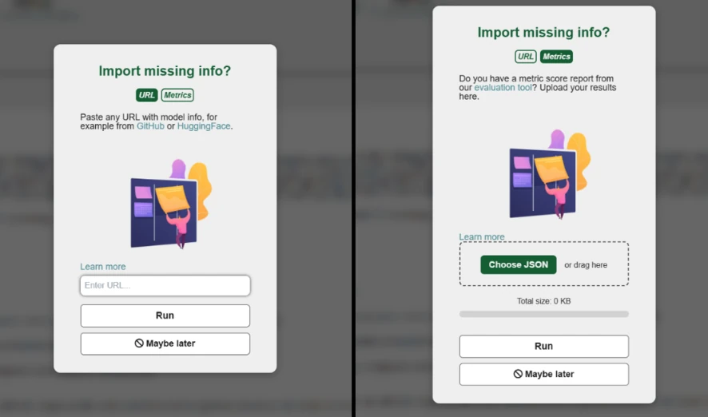
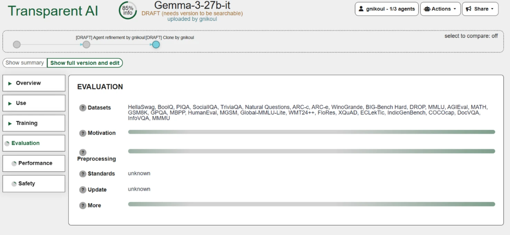
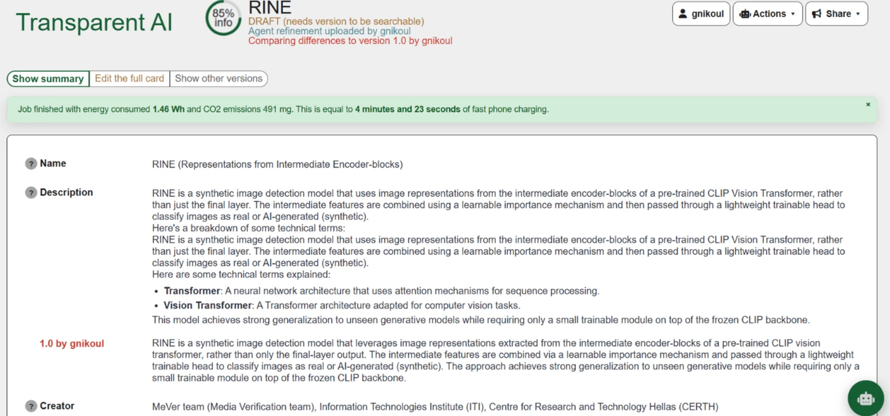
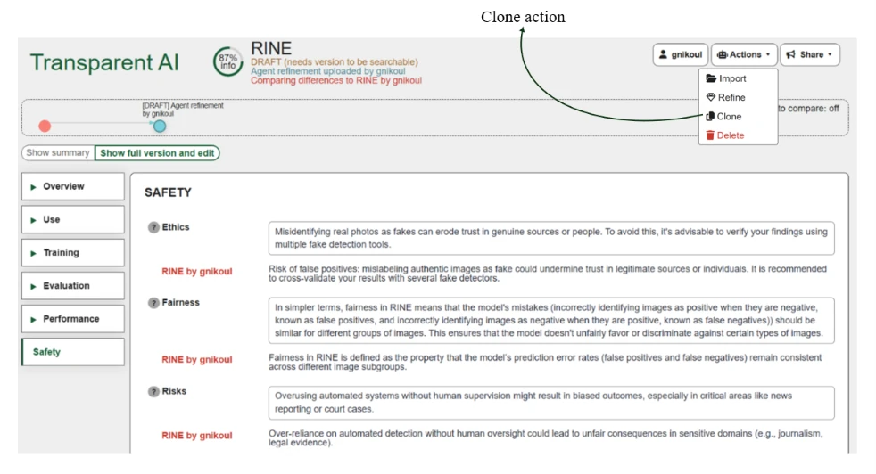
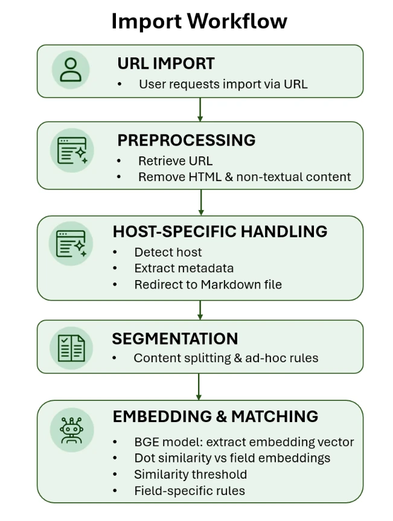
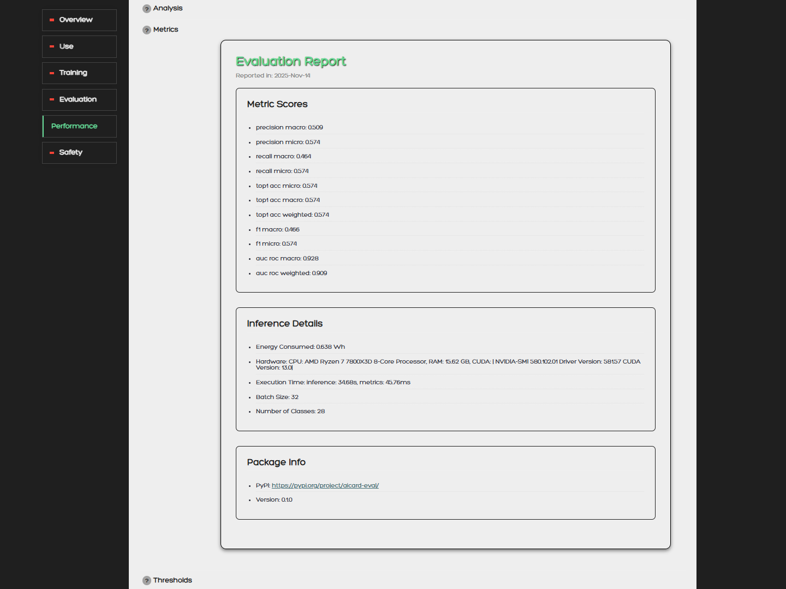
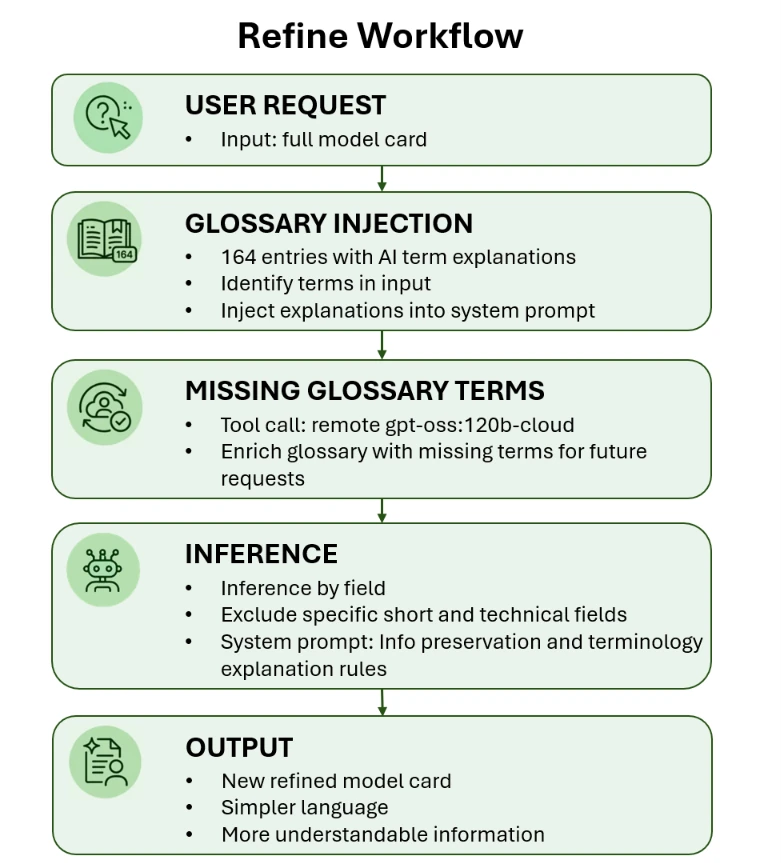
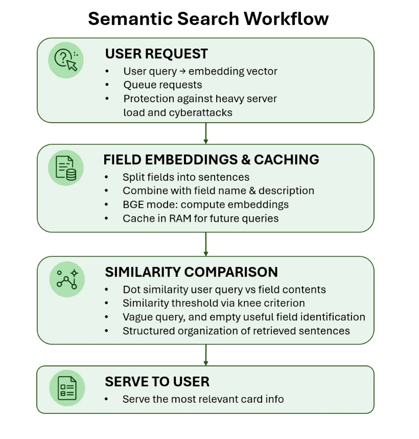

Handbook
FAQ:
Introduction
Our service
This service is developed under the AI-CODE Horizon project with Grant Agreement ID: 101135437. You can find the main page of the project along with all the services here. The purpose of this service is to provide a platform for creating, editing, and managing model cards.
So what is a model card? Briefly, it is a compact document that contains information about an AI model’s purpose, correct usage, training and evaluation methodology, performance, ethical risks, potential missuses, and more. Its goal is to promote transparency when distributing and deploying AI models.
Our service aims to make high-quality model cards more accessible. It first aims to assist AI model creators such as engineers, researchers, and developers to produce transparent models. This is achieved by equipping them with AI-powered tools to create model cards, and second to provide model cards that are comprehensible for both AI-experts and non-experts like journalists, data scientists, and media professionals.
Model cards
Model cards were first introduced by a Google research paper in 2018 with the intention to clarify the intended use, minimize unintended use, report performance, and in general provide a transparency report for ML and AI models.
In this service we provide a standardized model card format derived from our research and collaboration with experts in legal and ethical issues. We divide all information into six main sections:
1. Overview
Contains all basic information such as model name, overview, person or organization
developing the model, date of development, version, license and IP, citations, and any other similar
metadata about the model.
2. Use
Include intended use, software requirements, hardware requirements, technical
instructions, ethical risks, and similar information that provides guidance for correct usage.
3. Training
Contain information about the training data sets such as link
or description of the dataset, motivation for choosing these specific data, reliance on standards
(e.g. ISO25, IEEE26), and whether the dataset is up to date, of high quality, and representative
of the intended deployment environment.
4. Evaluation
Contain information about the data used for evaluation, including a link or description of the
dataset, the motivation for its selection, reliance on standards (e.g. ISO25, IEEE26),
and whether it is up to date, of high quality, and representative of the intended
deployment environment.
5. Performance
Consists of the performance metrics, decision thresholds, approaches to uncertainty
and variability of the results, and an overall analysis of the performance, biases, and fairness.
6. Safety
Includes all information regarding ethical aspects, safety concerns and caveats
in order to raises awareness about bad use and ethical risks.
| Model Card Fields | Content |
|---|---|
| Overview |
|
| Use |
|
| Training |
|
| Evaluation |
|
| Performance |
|
| Safety |
|
Basics
Metrics
In Artificial Intelligence (AI) and Machine Learning, metrics are numbers that report how good or bad a model is performing. To produce such metrics we perform an evaluation run during which we give data to the model that it has not seen during training. When the AI model generates its output we compare this result with the correct answer to calculate the metrics. An explanation of the most common metrics is given bellow.
Accuracy
Shows how many predictions were correct. Example: with 100 images
model classifies 90 correctly → Accuracy = 90%.
Accuracy is simple, but it can be misleading. No information about individual classes.
Precision
Answers the question: “When the model says YES, how often is it right?”.
Example: model predicts 20 spam emails. Only 15 are actually spam → Precision = 15 / 20 = 75%
High precision means few false positives.
Recall
Recall answers the question: “Out of all real YES cases, how many did the model find?”
Example: 50 real spam emails. Model finds 40 of them → Recall = 40 / 50 = 80%
High recall means few false negatives.
F1 Score
Combines Precision and Recall into one number. High F1 score means both
Precision and Recall have high scores.
Mean Absolute Error (MAE) Answers the question: “On average, how far are the model's predictions from the real values?”. MAE measures the average size of the mistakes. When MAE is low predictions are close to the real values.
ROC AUC Score
Answers the question: “How well can the model separate positive cases from
negative cases?”. We measure this score for different thresholds. For example if
threshold = 0.6, predictions above 0.6 are considered positive cases and bellow
0.6 negative cases. For ROC AUC Score 1.0 → perfect separation and for
0.5 → random guessing. High value means positive cases get higher scores than negatives.
AP (Average Precision)
Answers the question: “How precise is the model across different
confidence thresholds". The model predicts a class with a confidence threshold.
We can accept or reject the prediction depending on the confidence threshold.
AP is the average precision across different confidence thresholds.
mAP (Mean Average Precision)
Answers the question: “How precise is the model across many classes and across different
confidence thresholds". Following the AP score, the mAP is the average AP across
all classes. Mostly used in object detection and multi-class problems.
AR (Average Recall)
Answers the question: “How many of the real objects does the model manage to find
across different
confidence thresholds". Similar to AP we calculate the average recall across
different confidence thresholds.
mAR (Mean Average Recall)
Answers the question: “How many of the real objects does the model manage to find
across many classes and across different
confidence thresholds". Following the AR score, the mAR is the average AR across
all classes. Mostly used in object detection and multi-class problems.
IoU (Intersection over Union)
Answers the question: “How much does the predicted area overlap with the real area?”.
Often used in object detection and segmentation 0 → No overlap and 1 → Perfect overlap.
When IoU is high the predicted box matches the real object well.
Fairness
Fairness in AI is the attempt to correct bias in model decision. It usually refers to unfair outcomes against sensitive variables such as gender, ethnicity, disability and more. The importance of such topics differs between countries and cultures and thus there is no single definition of fairness. Nevertheless, such variables are important for the behaviour of systems that approve loans, screen job applications, detect fraud, recommend content and more. Biased AI can exclude people and reinforce existing inequalities.
Unfairness often derives from biased or incomplete training data, historical inequalities in the data, or metrics that optimize accuracy but ignore fairness. A fair system should produce similar outcomes for variables such as gender or ethnicity when such variables are irrelevant to the problem. In some cases fairness and accuracy can conflict. A model can be very accurate but unfair. A common practice to check the fairness of a system is to compare metrics like accuracy, precision, and recall across groups, acceptance or rejection rates, or false positives and false negatives per group. By trying to equalize these factors across groups the overall accuracy of the system can drop making a less accurate but more fair system.
Oversight
Oversight level describes how much control humans have over a system’s behavior and decision making. Below, we provide an explanation of the four categories, ranging from fully autonomous to fully human-supervised.
-
Self-learning / Autonomous
- Humans define goals, constraints, and initial training, but do not monitor or approve each action.
- The system may learn continuously from new data.
- Human involvement is typically limited to maintenance, audits, or review.
- This offers high efficiency and scalability, but also higher risk. Strong safeguards, monitoring, and clear accountability mechanisms are essential.
-
Example:
- A self-driving car navigates traffic entirely on its own, adjusting its path based on sensor input.
-
Human-on-the-Loop (HOTL)
- Decisions are executed without prior approval.
- Humans monitor performance and behavior.
- Intervention may include stopping the system, overriding outputs, or adjusting parameters.
- This balances efficiency and safety. It assumes humans can detect problems fast enough to prevent serious harm.
-
Example:
- An automated trading bot executes trades automatically, while a human supervisor monitors performance and can halt trading if anomalies appear.
-
Human-in-Command (HIC)
- The system cannot act beyond predefined boundaries.
- Humans retain final decision-making power at all times.
- Humans can shut down, reconfigure, or permanently disable the system.
- This ensures clear accountability and ethical control, especially in high-risk or regulated contexts.
-
Example
- An AI flags contracts with potential legal risks, but a human lawyer decides whether to reject, modify, or approve them.
-
Human-in-the-Loop (HITL)
- The system can not act on its own.
- The system proposes outputs or recommendations.
- A human reviews, modifies, or approves avery decision.
- This provides strong control and reduces error or harm, but slows down operation and limits scalability.
-
Example:
- A loan approval AI suggests whether to approve a loan, but a human officer must approve each decision before it is finalized.
Workflow
Readers
Readers require no login to access model cards, search functionalities, and sharing capabilities.
Search and Filtering. The catalogue can be searched by free text and narrowed down with
filters: by model task (e.g., image classification, text-to-speech), by model type (e.g., CNN, transformer, GAN),
and by completeness, to show only cards above a given information level.

Model cards. each card shows its completeness and version history at the top, can be viewed as a
summary or in full, and organises the full view into six sections with a navigation menu. Every field has a help
icon that explains its content, and operations such as import, refine, clone, report and sharing are available
from dedicated menus, with dialogs that explain each operation and link to this handbook.

Summary View. TrAI lets users switch at any time between a summary view and the
full view of a card. The summary view shows 16 fields, which describe what the model is, who it is for,
how it should and should not be used, and its safety aspects, while the full view shows all 47 fields
including technical information like code instructions, evaluation details, and more.
Versioning System. Each model card has a version history, shown as a timeline at the top of the card.
Readers can browse the complete history of
a card and compare any two versions: the text of the compared version is shown in red under each field of the current
version, so that changes are easy to spot.

Semantic Search. Model cards can sometimes may contain lengthy disclaimers and technical details that
discourage users from engaging with the full extent of captured information. To address this issue, TrAI offers a
semantic search allowing users to search the content of a model card. This takes the texture of a ChatBot that retrieves
only factual textual snippets from available information.

Creators
Creators must login with an acount to create and manage model cards. After you login you can create
a model card and all TrAI capabilities.
Import Operation. The import operation allows users to autocomplete a model card based on an external URL.
An AI agent extracts the information from the given source and autocompletes the model cards based on a semantic matching
operation. Furthermore, the user can import metrics produced by TrAI’s evaluation package, which the service uses to
programmatically create an evaluation report section for the model card. Read more info in the Import section.

Refine Operation. The refine operation creates a simplified version of a model card for non-AI experts. An LLM-based agent rewrites the descriptive fields of the card in plain language and explains the technical terms they contain, while short and technical fields, such as the name or the metrics, are left unchanged. The result is stored as a new version of the card, labelled as an agent refinement, which readers can compare with the original. Any registered user can refine a public card; each user can run up to three agent operations at a time. Read more info in the Refine section

Energy Cost. TrAI is equipped with an energy consumption tracker for the import and refine operations as seen in the green reporting message in the figure bellow. After each import or refine actions, the user is informed about the energy consumption of the operation, the equivalent CO2 emissions, and the estimated amount of time a mobile phone could be charged using the same amount of energy. This raises awareness about environmental impact for each user action.

Versioning System. Each model card has a version history, shown as a timeline at the top of the card, and a new version can be created whenever the corresponding AI model is updated or a new model version is released. New versions start as drafts, which are visible only to their creator and become searchable once they are published with a version number. Users can also clone an existing card, for example to document a fine-tuned variant of a model, which creates a new editable draft as a separate card in the same history. Readers can browse the complete history of a card and compare any two versions: the text of the compared version is shown in red under each field of the current version, so that changes are easy to spot. Refined versions created by the refine operation appear in the same history and can be compared with the original in the same way.

Functionalities
Import
The Import operation allows users to import model information from a given URL or an evaluation package report file. You can use the import functionality by going to Actions > Import from where a dialog window will appear.
Performs an AI-based yet deterministic import of model information. The preprocessing step prepares the input data for inference.
The user requests an import from the AI agent by providing a URL, which contains information about an AI model.
Then, a preprocessor retrieves URL content and removes irrelevant HTML elements and non-textual material.
Noisy information is also removed like symbols and equations, and metadata are extracted like title, creator, date, and URL sources.
When well-known model hosting services, such as HuggingFace and Github, are recognized as part of the import URL, additional metadata
are extracted from public endpoints, and the import mechanism may be redirected from reading an html-parsed version of README files
to extracting information from equivalent markdown files; this makes processing more lightweight and ensures that no information is
lost due to the services weaving noisy interfaces throughout information-rich segments. In the case of HuggingFace specifically,
task and type classifications and the number of parameters are extracted directly from platform metadata. Once information is gathered
in non-noisy but typically partially unstructured text, that is split into paragraphs while maintaining its context from surrounding
elements like titles; this process applies several ad-hoc rules for identification of paragraphs from unstructured text, including not
splitting code segments, accompanying markdown headings, or bullet lists that contain short descriptions (though bullet lists with
short descriptions are fragmented, as they are often used in lieu of headings).
Each paragraph is finally processed by the BGE (bge-small-en) model to extract a corresponding vector of numerical embedding capturing its semantic meaning.
Given these representations, all vectors are compared via dot similarity to the corresponding embedding vectors of model card field names
and descriptions. The embeddings of fields are precomputed on service load. As a means of refining this process, we ensure that card field
descriptions contain popular associated keywords and add fuzzy string similarity checks to the embeddings, where these checks are weighted
by only a small factor and mainly aim to disambiguate similar similarity scores. Fuzzy matching ignores stopwords (i.e., common semantically
meaningless words like propositions) helps disambiguate long paragraphs that touch on several concepts at once.
For fields that contain several known options (appearing as dropdown lists), the most similar option is chosen.
Finally, ad-hoc rules are added to the similarity matching, such as preventing technical information like numbers and code from being
inserted into fields without the technical tag, refusing the completion of short text fields with long paragraphs, adding a small boost
to filling fields found in the model card summary, and imposing a similarity threshold to avoid importing non-relevant information,
such as web advertisements.

For the Metrics option we allow the user to upload an evaluation report from our evaluation tool. This report is in a JSON format and includes metric scores, inference details, and package information. The operations will convert the JSON format into a readable HTML format and insert it into the Performance->Metrics field of the model card.

Refine
For the refine operation, TrAI uses the Qwen2.5 7B model provided by a self-hosted Ollama server.
The agent has access to an glossary with 164 entries that provides definitions of AI related terms.
The system identifies if the input includes any of these terms and injects them in the system prompt
before inference, and tracks missing terms. These missing terms can then be manually reviewed by the admin and added into the glossary.
As the glossary expands, the goal is to further populate the glossary and impove the effectiveness of the refine.
Simple short fields like name, task, type, contact, and others are excluded from this process. Furthermore, technical fields like
instructions which can contain code instructions for inference or metrics that can contain tables and lists of numbers are also excluded.
At the end of this process the agent creates a new version model card targeting non-AI experts to provide more understandable information.
The agent takes a model card as an input and inferences each field separately with the bellow prompt:
Your task is to rewrite the original text so that it is easier to understand for non-AI experts.
Preserve the original meaning, information, and claims.
### Rules
1. Preserve information
{specific instructions}
2. Explain technical concepts
{specific instructions}
3. Use the provided glossary explanations
{glossary injections}
4. Use the technical-term explanation tool when necessary
{specific instructions}
5. Avoid unsupported claims
{specific instructions}
6. Preserve original claims
{specific instructions}
### Final verification
Before returning the answer, verify that:
1. Every original factual claim is preserved.
2. Every important technical concept is preserved.
3. Explicit attributes and qualifications are preserved.
4. Unfamiliar technical terms are explained.
5. Tool explanations are used accurately.
6. No unsupported claims or qualifiers were added.
7. No unsupported adjective or adverb was added.
8. No unsupported purpose, benefit, comparison, or evaluation was added.
9. No original claim was weakened, removed, or replaced.
Return ONLY the final rewritten text.

AI-Chat
This follows a similar methodology to model import by using the BGE (bge-small-en) model and aiming
at deterministic results. The main difference is that information is already structured into model card fields, the most relevant of
which are retrieved. In particular, it is easier to extract meaningful embeddings by splitting fields into individual sentences –rather
than paragraphs- and combining those with the field name and description. This enables an embedding representation to be generated for
each sentence and cached in memory for efficiency. The cached embeddings are invalidated when the Model Card is edited or after an
extended period of inactivity. Caches are not stored in the database, due to space considerations. The user query is also transformed
to the same embedding space to facilitate comparison.
An important detail of the embedding mechanism that yields better search results is that we ensure that generated embeddings are orthogonal
to the embeddings of their average representation, hence ensuring that their expected average similarity to random user queries is zero.
This mechanism is analogous to stopword removal, but operates in the embedding space by removing common embedding components rather than
frequent words. For example, even though the word "model" may occur several times in field descriptions, the embeddings of more meaningful
words related to the user query are prioritized; that is, asking about "model version" focuses more on the semantics related to the word
"version" to identify only the version information as unique.
For the final comparison step the semantic search calculates the dot product similarity between sentences and user query embeddings.
Contrary to the import task, multiple sources of information are extracted by considering the most similar embeddings. The threshold cutoff
for selecting the most similar embeddings is chosen in accordance to an automated implementation of the knee criterion, with the approach
merely warning the users about needing to specialize their query more if too many sentences would be found similar to it.
To support this feature for many concurrent users, we selected the aforementioned lightweight model and introduced a hierarchical caching
mechanism in the service’s backend that keeps track of recently viewed cards in random access memory instead of only the database storage.
The mechanism also caches semantic embeddings used in recent searches. As a result, embeddings are not recomputed for text fields when users
engage in lengthy conversations, or when interacting with cards that other users have recently interacted with. Furthermore, we account for
unexpected loads (user spikes, cyberattacks against the service, etc.) by queuing semantic embedding extraction across all requests so that
a priorly known compute budget is never exceeded.

Share
Each card version can be shared through a link and posted in social media, or embedded as a banner in third-party pages, and exported as PDF, Markdown or JSON. The JSON and Markdown export provides a machine-readable version of the card for integration into third-party applications, whereas the PDF export offers a sharable human-readable document.
Report
Logged in Users can report a model card that they consider inaccurate, outdated or inappropriate. Reports are reviewed by the administrator, who can contact the creator, hide the card (it can only be unhidden via collaboration with its owner), or completely remove it. This gives the community a way to flag problematic content, including automatically imported cards, and supports the monitoring of card reliability. Furthermore, the reports are anonymous -no user info is attached to them- and confidential in that only the card owner and the administrator can see the report.